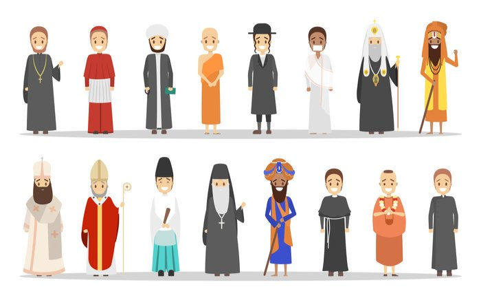

About

I am an Assistant Professor of Political Science at the University of Pittsburgh. My research focuses on two broad themes: political parties and identity politics.
My first (coauthored) book project, Norms, Ideas, and Identities: Overcoming Discrimination Against Immigrants, examines the extent to which common norms, identities, and ideas can reduce prejudice and discrimination against immigrants and ultimately facilitate their inclusion in democratic societies. This book project is currently under contract at Princeton University Press.
My second book project, Severed Connections: Intraparty Politics and Representation in Africa, investigates how political parties and the nature of candidate selection institutions influence the relationship between elected representatives and their constituents in new democracies. This project won APSA’s Juan Linz Prize for Best Dissertation in the Comparative Study of Democracy in 2020.
My work on these two themes have been published or are forthcoming in the American Journal of Political Science, Journal of Experimental Political Science, Party Politics, Political Science Research and Methods, Proceedings of the National Academy of Sciences, and Political Analysis.
I received my PhD in Political Science from UC Berkeley in 2018 and was previously a pre/postdoctoral fellow at the Identity & Conflict Lab (Director: Nicholas Sambanis), University of Pennsylvania. You can reach me at dannychoi[at]pitt[dot]edu. The link to my university website is [here].
Book Projects
1. Norms, Ideas, and Identities: Overcoming Discrimination Against Immigrants

Donghyun Danny Choi, Mathias Poertner, and Nicholas Sambanis
Under Contract at Princeton University Press, Princeton Series in Political Behavior
Book Abstract
This book argues that inter-group conflict between natives and immigrants can be decreased through shared social norms that define a common ingroup identity. Anti-immigrant bias is a form of ethnic conflict driven mainly by cultural differences. These differences create “social distance” between natives and immigrants, leading to bias and discrimination. The usual prescription to reduce bias via reducing social distance has been to change the expression of ascriptive differences that categorize immigrants as an outgroup relative to the native ingroup: immigrants will often change their names, their customs, their language, and even their religion. This process, often pursued by policies of coercive assimilation of immigrant populations, changes group boundaries to forge a degree of homogeneity that is thought to be required to reduce intergroup conflict. This book argues that it is not necessary for immigrants to change their appearance, their religion, or their language in an attempt to “pass” as members of the majority. Rather, bias and discrimination toward immigrants can be reduced if immigrants and natives share social norms that define a common ingroup identity as citizens.
The key here is that norms must be shared — not that the burden must necessarily be on immigrants to adopt to local norms that they find repressive. Although norm-sharing will often take place through a process of assimilation of minority groups into majority populations, it could also occur via a gradual, two-way process of mutual acculturation over time. In the short term, one strategy to overcome sources of bias and discrimination is to resolve uncertainty about the depth of ideational differences that divide natives and immigrants. This book shows that, when natives observe immigrant behavior that suggests that the two groups share valued civic norms, this reduces discrimination by de-emphasizing the native-immigrant divide and forging a common ingroup identity that includes both natives and immigrants. Different shared identities can be defined by different norms; and the more salient is that identity to each individual’s self-concept, the more discrimination toward immigrants will be reduced. This conclusion speaks to an ongoing debate about the limits of multiculturalism in Europe. Our book suggests that multiculturalism is possible, but that it also has its limits. It is possible to reduce discrimination due to differences in ascriptive traits, but this requires sharing norms and ideas, which would eliminate the symbolic threat generated by ascriptive differences.
2. Severed Connections: Intraparty Politics and Representation in Africa

Donghyun Danny Choi
Winner, Juan Linz Prize for Best Dissertation in the Comparative Study of Democracy, Democracy & Autocracy Section, APSA 2020
Book Abstract
This book project explores the conditions under which political parties can undermine the representation of citizen interests in new democracies. Conventional wisdom has emphasized the centrality of parties in mediating the relationship between voters and politicians, attributing the representational deficit observed across the developing world to the lack of stable partisan attachments or the ephemeral nature of political parties. I show that this may not be the case. To the contrary, political parties and their leaders can capitalize on their electoral dominance in local elections and authority over intraparty candidate selection institutions to sever the connection between voters and their representatives.
I employ a multi-method research strategy that brings together qualitative, quantitative, and experimental evidence based on 18 months of fieldwork in Kenya. To first establish that African parties often hold a monopoly on local power, I combine insights from more than 70 politician interviews and analyses of nationally representative surveys and constituency-level electoral returns across six African democracies. Drawing on a qualitative case study of political party organization in Kenya and a series of experiments conducted among 3,000 partisan primary voters, I also show that party leaders possess both institutional power and the persuasive influence over partisans to command control over the candidate selection process. Finally, I use supervised machine-learning methods on a large text corpus of more than 51,000 newspaper articles on Kenyan politicians to document the existence of a nomination tournament in which party leaders select candidates that focus on “party-oriented” activities, rather than “constituency-oriented” activities that would benefit their constituents.
Substantively, these findings contribute to the emerging consensus that democratic elections are necessary but insufficient to foster better representation and responsiveness for the people. However, while the dominant narrative in comparative politics has focused on structural-institutional factors such as ethnicity, clientelism, or electoral systems to understand this deficit, I shift the attention back to political parties. My project shows that the ideal of “representative democracy” is likely to remain elusive unless democracy within political parties is realized. When power and authority over party institutions and decision-making processes accumulate to a single individual or a small group of elites, these actors have the potential to effectively become “autocrats” within their domain; manipulating elected representatives who should primarily be interested in tending to their constituents to serve their political ambitions, thereby derailing the democratic process that they should protect.
Publications
The Hijab Penalty: Feminist Backlash to Muslim Immigrants
Is opposition to Muslim immigration in Western societies driven by perceptions of a cultural threat? Can shared ideas between natives and immigrants mitigate discrimination against immigrants? We hypothesize that natives' bias against Muslim immigrants is shaped by the belief that Muslims hold conservative attitudes about women’s rights and that this ideational basis for discrimination is more pronounced among native women. We test this hypothesis in a large-scale field experiment conducted in 25 cities across Germany, during which 3,797 unknowing bystanders were exposed to brief social encounters with confederates who revealed their ideas regarding gender roles. We find significant discrimination against Muslim women, but this discrimination is eliminated when these women signal that they share progressive gender attitudes held by natives. Through an implicit association test and a follow-up survey among German adults, we further confirm the centrality of ideational stereotypes in structuring opposition to immigration. Our findings have important implications for reducing conflict between native-immigrant communities in an era of increased cross-border migration.
- American Journal of Political Science. Accepted. [link] [appendix] [dataverse]
- with Mathias Poertner (TAMU) and Nicholas Sambanis (Penn)
- Co-winner, Best Paper Award, European Politics and Society Section, APSA, 2021
Temperature and Outgroup Discrimination
High temperatures have been linked to aggression in humans and recent literature has established a connection between climate change and violent inter-group conflict. Previous studies have emphasized economic mechanisms in explaining the effect of climatic conditions on conflict. Using data from two large-scale field experiments, we show evidence of a direct causal effect of high temperatures on nonviolent inter-group conflict, proxied by discrimination in helping behavior toward an ethno-religious outgroup. In our experiments, as temperatures rise, individuals faced with a choice to provide help to strangers in every-day interactions disciminate more against ethno-religious minorities. In light of expected increases in the frequency of temperature shocks due to global warming, our findings suggest that inter-group conflict of all forms will become more prevalent in the future.
- Political Science Research and Methods. Accepted. [link] [appendix] [dataverse]
- with Mathias Poertner (TAMU) and Nicholas Sambanis (Penn)
Paying to Party: Candidate Resources and Party Switching in New Democracies
Party switching among legislative candidates has important implications for accountability and representation in democratizing countries. We argue that party switching is influenced by campaign costs tied to the clientelistic politics that persist in many such countries. Candidates who are expected to personally pay for their campaigns, including handouts for voters, will seek to affiliate with parties that can lower those costs through personal inducements and organizational support. Campaign costs also drive candidate selection among party leaders, as they seek to recruit candidates who can finance their own campaigns. We corroborate these expectations with an original survey and embedded choice experiment conducted among parliamentary candidates in Zambia. The conjoint analysis shows that candidates prefer larger parties that offer particularistic benefits. The survey further reveals that parties select for business owners as candidates; the very candidates most likely to defect from one party to another.
- Party Politics. Forthcoming. [link] [appendix]
- with Leo Arriola (Berkeley), Justine Davis (Michigan), Melanie Phillips (Berkeley), Lise Rakner (Bergen)
Linguistic Assimilation Does Not Reduce Discrimination Against Immigrants: Evidence from Germany
Many western liberal democracies have witnessed increased bias against immigrants and opposition to multiculturalism. Prior research suggests that ethno-linguistic differences between immigrant and native populations are a key cause of that bias due to the perception of cultural threat. Linguistic assimilation has been proposed as the key mechanism to reduce bias and mitigate conflict between natives and immigrants. Using a large-scale field experiment in Germany—a country with a high influx of immigrants and refugees—we show that linguistic assimilation does not reduce bias. We find that Muslim immigrants are no less likely to be discriminated against if they appear to be linguistically assimilated. However, we also find that ethno-linguistic differences do not cause bias among German natives, suggesting that Germany may have already reached a relatively high level of tolerance to multiculturalism.
- Journal of Experimental Political Science. Forthcoming. [link] [appendix]
[dataverse]
- with Mathias Poertner (TAMU) and Nicholas Sambanis (Penn)
Parochialism, Social Norms, and Discrimination against Immigrants
Ingroup bias and outgroup prejudice are pervasive features of human behavior, motivating various forms of discrimination and conflict. In an era of increased cross-border migration, these tendencies exacerbate inter-group conflict between native populations and immigrant groups, raising the question of how conflict can be overcome. We address this question through a large-scale field intervention conducted in 28 cities across three German states, designed to measure assistance provided to immigrants during everyday social interactions. This randomized trial found that cultural integration signaled through shared social norms mitigates – but does not eliminate – bias against immigrants driven by perceptions of religious differences. Our results suggest that eliminating or suppressing ascriptive (e.g. ethnic) differences is not a necessary path to conflict reduction in multicultural societies; rather, achieving a shared understanding of civic behavior can form the basis of cooperation.
Fuzzy Sets on Shaky Ground: Parameter Sensitivity and Confirmation Bias in fsQCA
Scholars have increasingly turned to fuzzy set Qualitative Comparative Analysis (fsQCA) to conduct small- and medium-N studies, arguing that it combines the most desired elements of variable-oriented and case-oriented research. This article demonstrates, however, that fsQCA is an extraordinarily sensitive method whose results are worryingly susceptible to minor parametric and model specification changes. We make two specific claims. First, the causal conditions identified by fsQCA as being sufficient for an outcome to occur are highly contingent upon the values of several key parameters selected by the user. Second, fsQCA results are subject to marked confirmation bias. Given its tendency toward finding complex connections between variables, the method is highly likely to identify as sufficient for an outcome causal combinations containing even randomly generated variables. To support these arguments, we replicate three articles utilizing fsQCA and conduct sensitivity analyses and Monte Carlo simulations to assess the impact of small changes in parameter values and the method’s built-in confirmation bias on the overall conclusions about sufficient conditions.
- Political Analysis. 2015. 23(1), 21-41. [link]
- with Christopher Krogslund and Mathias Poertner (TAMU)
Under Review
Ethnic Bias in Judicial Decision-making: Evidence from the Kenyan Appellate Courts
Understanding sources of judicial bias is essential for establishing due process. To date, theories of judicial decision-making are rooted in ranked societies with majority-minority group cleavages, leaving unanswered which groups are more prone to express bias and whether it is motivated by in-group favoritism or out-group hostility. We examine judicial bias in Kenya, a diverse society which features a more complex ethnic landscape. While research in comparative and African politics emphasize instrumental motivations underpinning ethnic identity, we examine the psychological, implicit biases driving judicial outcomes. Using data from Kenyan criminal appeals and the conditional random assignment of judges to cases, we show judges grant coethnic appeals at a 3--5 percentage points higher rate than noncoethnic appeals. To understand mechanisms, we use word embeddings to analyze the sentiment of written judgments. Judges use more trust-related terms writing for coethnics, suggesting that in-group favoritism motivates coethnic bias in this context.
- with Andy Harris (NYU Abu Dhabi), Fiona Shen-Bayh (William & Mary) [paper]
- Winner, Fiona McGillivray Award for Best Paper, Political Economy Section, APSA, 2020
- Revise and Resubmit at American Political Science Review
Increasing Cross-Ethnic Trust: Political Endorsements as Vicarious Contact
Can endorsements persuade voters to transcend politicized ethnic divisions to support candidates from other groups? We argue that endorsements can serve as a form of vicarious contact, allowing voters to observe cooperative interactions between coethnic and non-coethnic politicians. This vicarious contact encourages voters to positively update their beliefs about their potential treatment under a non-coethnic in office. In assessing this claim, we provide evidence from Kenya, where simulated radio news segments were used to experimentally manipulate the ethnic relationship among voters, endorsers, and candidates. We find that voters who hear endorsements from their coethnics, as opposed to non-coethnic endorsements or no endorsement at all, are significantly more likely to vote for a non-coethnic candidate. We further find evidence suggesting this result is mediated by coethnic trust: the trust premium enjoyed by coethnic endorsers is extended to non-coethnic candidates. Voters believe endorsed candidates are more likely to provide non-discriminatory representation.
- with Leo Arriola (Berkeley) and Matthew Gichohi (Bergen) [paper]
- Revise and Resubmit at Journal of Politics
The Rejection of Election Results in Africa
Election results in Africa are more likely to be rejected by opposition parties than anywhere else in the world. This rejection rate has remained nearly constant since the renewal of multiparty elections in the early 1990s. We hypothesize that the persistence of this pattern can be explained, in part, by the victory-legitimacy tradeoff that incumbent leaders must negotiate each electoral cycle. Incumbents who rely on violent tactics to secure their hold on power and demonstrate their strength as political actors should be expected to provoke the rejection of election results. Yet, at the same time, incumbents understand that complete rejection of an election can undermine their legitimacy. We theorize that incumbents in such situations can induce greater acceptance of election results by appointing some of their opponents to post-election governments. An analysis of nearly 200 African elections shows that opposition parties are less likely to accept election results when campaign periods are tainted by violence, regardless of the constraints on executive power or the quality of electoral institutions. The analysis further shows that opposition acceptance of election results systematically shapes post-election government formation in Africa: more parties enter the executive cabinet as more opponents accept the results.
- with Leo Arriola (Berkeley) and Staffan Lindberg (Gothenburg)
- Revise and Resubmit at African Affairs
Mobile Communication Technology and National Identity in Sub-Saharan Africa
We examine how the expansion of mobile internet infrastructure affects national identity in sub-Saharan Africa. In diverse societies where elections are contested along ethno-communal lines, we argue that access to mobile internet undermines national identity because it facilitates voter exposure to the polarizing tendencies of internet-based social media and communication platforms. Applying a difference-in-differences design on mobile coverage maps and geocoded survey data of more than 50,000 African citizens, we show that access to mobile internet reduces identification with the nation by up to 5-7 percentage points. To establish support for our electoral mechanism, we exploit as-if random variation in the timing of individuals' survey interviews relative to presidential elections, during which we argue divisive and polarizing forces are at their peak. Our analysis shows that electoral proximity intensifies the negative effect of mobile internet. These findings highlight how technological innovations can inhibit the process of state-building in diverse societies.
- with Benjamin Laughlin (NYU Abu Dhabi) and Anna Schultz (Independent Researcher) [paper]
Do Voters Respond to Cross-Ethnic Campaigning in Divided Societies?
Are voters receptive to direct campaign appeals from non-coethnic candidates? Candidates competing for office in ethnically divided societies often seek to win national support by reaching out to voters from different groups. In this context, we argue that candidates may inadvertently dampen their support when personally campaigning among non-coethnic voters. Drawing on the logic of group threat, we claim that the physical presence of a candidate in a non-coethnic constituency, usually through campaign rallies, can heighten voters’ perceptions of intergroup competition. We corroborate this expectation by leveraging a natural experiment that exploits the timing of an unscheduled campaign rally held by a presidential candidate in a non-coethnic constituency during Kenya’s 2017 elections. The logic of group threat becomes evident when comparing survey respondents before and after the rally: the candidate’s post-rally favorability decreases among non-coethnic voters and the proportion of voters identifying in ethnic rather than national terms simultaneously increases.
- with Leo Arriola (Berkeley), Matthew Gichohi (Bergen), and Ken Opalo (Georgetown) [paper]
Can Americans Depolarize? Assessing the Effects of Reciprocal Group Reflection on Partisan Polarization
Overcoming America's deep partisan polarization poses a unique challenge: Americans must be able to disagree on policy while nonetheless agreeing on more fundamental democratic principles. We study one model of depolarization--reciprocal group reflection--inspired by marital counseling and implemented by a non-governmental organization,''Braver Angels.'' We randomly assigned undergraduate students at four universities either to participate in a Braver Angels workshop or simply to complete three rounds of surveys. The workshops significantly reduced polarization according to explicit and implicit measures. They also increased participants' willingness to donate to programs aimed at depolarizing political conversations. These effects are consistent across partisan groups, though some dissipate over time. Using qualitative data collected during the workshops, we inductively generate a new theory of depolarization that combines both informational and emotional components such that citizens, moved to empathize with an outgroup, become more likely to internalize new information about outgroup members.
- with Hannah Baron (Brown), Robert A. Blair (Brown), Laura Gamboa (Utah), Jessica Gottlieb (TAMU), Amanda L. Robinson (OSU), Steven C. Rosenzweig (Boston U.), Meghan M. Turnbull (Georgia), Emily A. West (Pitt) [paper][policy brief]
Navigating 'Insider' and 'Outsider' Status as Researchers Conducting Field Experiments
- with Sumitra Badrinathan (Oxford), Sabrina Karim (Cornell), Eunji Kim (Vanderbilt), and Yang-Yang Zhou (British Columbia) [paper]